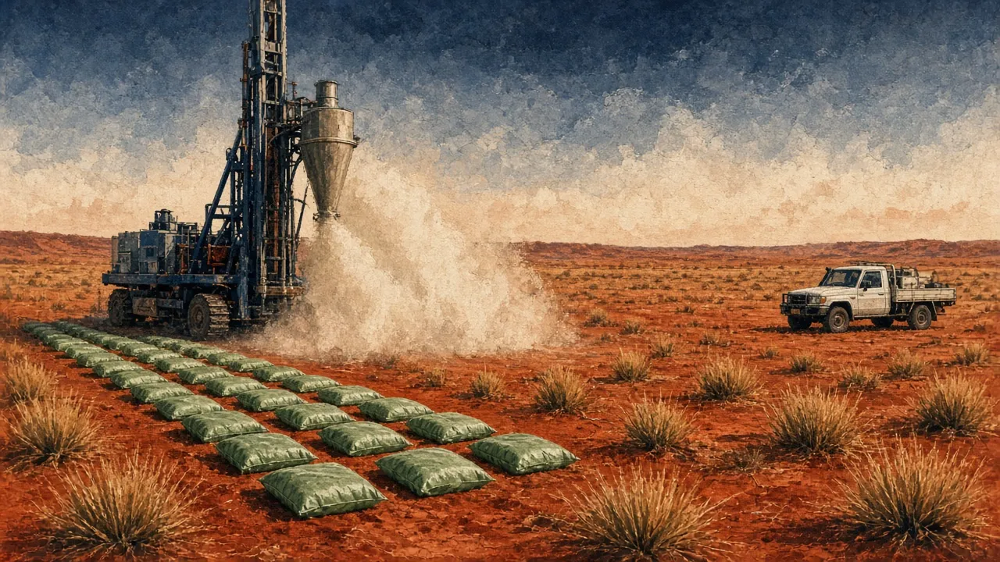

- Calculate gram-metres and length-weighted grades from an assay table
- Estimate true width from hole and orebody geometry
- Decompose a metal-equivalent grade and check its price deck
- Flag at least three disclosure issues in an unseen drill release within 10 minutes
On this page
- Why drill releases matter so much
- What each exploration tool detects
- Drill types
- Downhole length vs true width
- Gram-metres, length-weighting and "including"
- Metal equivalents: always split them out
- Context: depth, spacing and step-outs
- QA/QC, nugget effect and visual estimates
- "Spot 5 problems": a doctored release
- Checkpoint quiz
Why drill releases matter so much
For an explorer, the drill release is the business. Most large junior share-price moves (up or down) happen on drill results. They are also the easiest place to be misled, by accident or by design. ASX Listing Rule 5.7 and JORC Table 1 require a lot of disclosure. Your job is to read the parts the headline leaves out.
What each exploration tool detects
| Tool | Detects | Good for | Not proof of |
|---|---|---|---|
| Geological mapping, rock chips | Surface mineralisation and alteration | Target generation | Grade at depth or continuity |
| Soil / lag geochemistry | Metal anomalies in surface material | Finding halos under thin cover | Ore (transported cover can hide or displace anomalies) |
| Magnetics | Magnetic minerals (magnetite, pyrrhotite) | Structure, intrusions, BIF | Gold or copper directly |
| Gravity | Density contrasts | Massive sulphides, IOCG, basins | Grade |
| Electromagnetics (EM) | Conductors | Massive nickel and VMS sulphides | That a conductor is ore (graphite also conducts) |
| Induced polarisation (IP) | Disseminated sulphides (chargeability) | Porphyries, disseminated gold | Economic sulphides (pyrite also responds) |
Drill types
- Aircore (AC): cheap, fast, shallow. It drills through soft cover and weathered rock to bedrock. It is used for first-pass geochemistry (how Hemi was found).
- Reverse circulation (RC): the workhorse. Rock chips return inside the drill rods, so contamination is low and it is cheap per metre. It is used for most resource drilling down to about 200–300 m.
- Diamond (DD): solid core. It gives structure, geotechnical data, metallurgical samples and density. It is the most expensive.
- RAB (rotary air blast) is older and cheaper, and its samples are more contaminated. Treat RAB grades as indicative only.

Downhole length vs true width
An intercept of "40 m @ 2 g/t" measures along the hole. If the hole cuts the orebody obliquely, the true width of the orebody is much smaller.
True width = downhole length × sin(angle between hole and orebody)
This is the same as downhole × cos(angle between the hole and the normal to the orebody). A hole at right angles to the orebody gives downhole = true. A hole at 30° to the orebody gives a downhole length twice the true width.
Worked. A hole is drilled at −60° towards the west. The orebody dips 60° to the east, so the hole meets it at 60° (60° + 60° = 120°, and the acute angle is 60°). Downhole 25 m → true ≈ 25 × sin 60° = 21.7 m.
Faded. The same orebody, but the hole is drilled at −60° towards the east (down-dip). The angle between hole and orebody is about 0°, so the hole runs along the orebody. Downhole widths become meaningless. What should you conclude about a release with "120 m @ 1.5 g/t" from such a hole?
Independent. Dip 45°, hole −55° drilled against the dip. Find the angle and the true width of a 30 m intercept. (Answer: angle = 180 − 45 − 55 = 80°; true ≈ 29.5 m.)
Gram-metres, length-weighting and "including"
- Gram-metres (g·m) = width × grade. 10 m @ 3 g/t = 30 g·m. Use it to compare intercepts quickly. As a rough rule, >50 g·m is a notable gold hit and >100 g·m is very good, depending on depth and style unverified.
- Length-weighted grade = Σ(length × grade) ÷ Σ(length). Never average grades without weighting.
- "Including" reports a higher-grade sub-interval inside the headline. It is not additional metal.
"52 m @ 2.1 g/t including 4 m @ 18 g/t" sounds like two great results. Strip out the 4 m and the remaining 48 m runs only about 0.8 g/t: (52 × 2.1 − 4 × 18) ÷ 48 ≈ 0.78 g/t. The headline was carried by one narrow zone. Ask whether that zone is continuous between holes.
Metal equivalents: always split them out
A metal-equivalent grade (AuEq, CuEq, NiEq) converts by-products into the main metal using assumed prices and recoveries. It is legitimate, and JORC requires the formula to be disclosed, but it is the single most abused number in junior releases.
Chalice's maiden Gonneville resource (Nov 2021) was 330 Mt @ 0.58% NiEq, of which only about 0.16% was nickel ✔. Most of the value came from palladium, platinum, copper and cobalt. That is fine if PGM markets cooperate, but "nickel company" was the wrong mental model, and the prices behind the equivalent mattered enormously.
Context: depth, spacing and step-outs
- "From X m" matters. 10 m @ 5 g/t from 20 m is open-pit ore. From 600 m it needs an underground mine and much more grade.
- Step-out vs infill. Step-outs test extensions, while infill tightens spacing to upgrade the resource category. A great step-out matters more than a great infill hole.
- Drill spacing vs category. Inferred resources may sit on 80–100 m spacing, Indicated on 40–50 m and Measured tighter unverified.
- Collar tables. Look for holes that are missing from the table of significant intercepts. JORC requires all material results, including the poor ones.
QA/QC, nugget effect and visual estimates
- QA/QC: certified standards, blanks and field duplicates should be inserted at regular intervals. Table 1 describes them. If it is missing or vague, discount the results.
- Nugget effect: coarse gold gives erratic repeats. Screen-fire assays, larger samples and top-cuts manage it. Ask whether the grade is top-cut.
- Visual estimates: ASX guidance under LR 5.7 strictly limits reporting of visual estimates (e.g. "30% sulphides") before assays. Expect cautionary statements, and remember that sulphides are not grade.
Bre-X claimed a giant gold deposit at Busang, Indonesia, with figures ranging from 70 Moz to as much as 200 Moz. Independent check work by Strathcona in 1997 confirmed that samples had been salted with gold. The peak market value was about C$6bn, and it went to zero ✔. The scandal led directly to NI 43-101 in Canada (in force Feb 2001) ✔. Lessons: crushed core, no independent assays and a lack of QA/QC transparency are existential red flags.
"Spot 5 problems": a doctored release
Read this fictional release the way an analyst would. Tap every phrase that should worry you, then check your picks. Try it before you read the red-flag list below.
- Method: aircore and RC through transported cover, the right tool for first-pass work under cover.
- What to compute: gram-metres for the best holes; whether widths are downhole or true (the early holes were broadly oriented and often reported downhole).
- Depth: the mineralisation was shallow, which pointed to an open pit early on and explained the market's excitement.
- QA/QC: check the Table 1 sections. Early aircore results are indicative and need RC and diamond follow-up.
- Market: +115% intraday to 9.9c (6 Feb 2020).
- Downhole widths with no true-width statement on oblique holes
- Metal equivalents without prices, recoveries and component grades
- "Including" intervals that carry the whole headline
- Missing holes and selective reporting
- Visual estimates and "nearby mine" comparisons
- Rock chips and soils headlined as if they were drill results
Practice tasks
Checkpoint quiz
Score 80% or more to mark this module mastered. Your best score is saved in this browser.